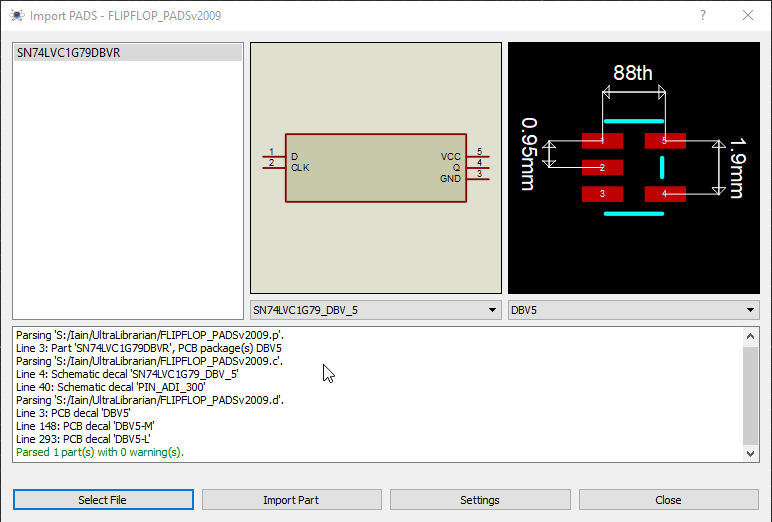

Customers with a valid USC contract can import directly from the library pick form using the web search service which is both simpler and faster.
Proteus comes with a library part importer that will bring in both the schematic component and the layout footprint from popular third party tools such as Ultra-Librarian, ComponentSearchEngine and SnapEDA. The process of import is generally extremely simple:
1) Search for and find the part on the website.
2) Bring it in to Proteus from the Import Parts command on the Library menu.
See Also:

Importing a Part into Proteus